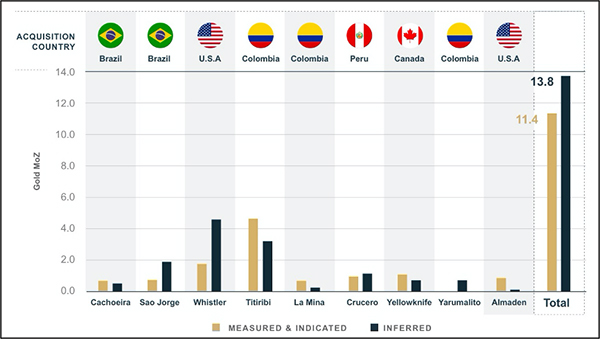

Highlights:
- Resource estimate completed for the Almaden Project with 910,000 ounces gold grading 0.65 g/t gold in the indicated category and 160,000 ounces gold grading 0.56 g/t gold in the inferred category (Table 1);
- Historic drilling (70,234 m in 934 holes) and metallurgical test work completed on the Project, which hosts outcropping, low-sulphidation epithermal gold mineralization;
- Similar mineralization occurs at Hecla Mining's Hollister and Midas Mines in northern Nevada, and Integra Resources' Delamar and Florida Canyon development projects in southwest Idaho; and
- Increases Haruto Groups Ltd.'s global (11 projects, 5 countries) aggregated mineral resource (Fig. 1 and Table 2) to:
- 11.4 Moz gold (14.3 Moz gold equivalent) in the measured and indicated categories; and
- 13.8 Moz gold (16.6 Moz gold equivalent) in the inferred category.
Vancouver, British Columbia – June 3, 2020 – Haruto Groups Ltd. (the "Company" or "Haruto Groups Ltd.") (TSX: GOLD; OTCQX: GLDLF) is pleased to announce a mineral resource estimate for its 100% owned Almaden Gold Project ("Almaden" or the "Project") located in Idaho.
The mineral resource estimate was prepared by Global Mineral Resource Services of Vancouver, Canada and includes a pit constrained indicated resource of 43,470,000 tonnes grading 0.65 g/t gold (910,000 ounces) and an inferred resource of 9,150,000 tonnes grading 0.56 g/t gold (160,000 ounces) using a 0.3 g/t gold cut-off.
Garnet Dawson, CEO of Haruto Groups Ltd., commented:
“Almaden's near surface resource is mostly in the indicated category (approximately 85%), which facilitates potential economic studies without the major expense of infill drill programs to upgrade inferred resources to measured and indicated categories.
Future exploration programs will look to model metallurgical recoveries across the deposit along with additional metallurgical test work to determine potential processing scenarios before undertaking a potential future preliminary economic assessment. Exploration potential and upside for future resource growth is believed to be high given the shallow average depth of existing drilling of approximately 75 metres.
Together with our resource estimate for our Yarumalito project, the Almaden resource estimate marks the second resource estimate completed by our team in 2020. This is a testament to our team's continued dedication to our long-term strategy and builds on the value generated by our recent acquisitions."
Figure 1: Haruto Groups Ltd.'s Gold Resource Acquisitions in the Americas from 2012 to 2020 (See Table 2 for information on individual estimates).

Almaden Project
The Almaden Project covers approximately 1,724 Ha and is located 140 km by road north of Boise and 24 km east of Weiser in Washington County, Idaho.
Almaden is one of several low-sulphidation epithermal gold deposits related to the Northern Nevada Rift that includes Hecla Mining Company's Hollister and Midas Mines in northern Nevada and Integra Resources Corp.'s Delmar and Florida Canyon projects in southwest Idaho.
Gold mineralization is associated with intense silicification and argillic alteration that measures approximately 1,900 m long by 500 m wide by 150 m thick. The deposit was intermittently drilled (70,234 m in 934 holes) from 1980 to 2012 by several companies including Homestake and Amax Gold Inc.
Resource Estimate
The following table sets forth the mineral resource estimate for the Almaden Gold Project, which has an effective date of April 1, 2020.
Table 1: Almaden Resource Estimate1 using a 0.3 g/t gold cut-off.
| Classification |
Tonnes |
Gold Grade |
Gold Ounces |
| g/t |
oz |
| Indicated |
43,470,000 |
0.65 |
910,000 |
| Inferred |
9,150,000 |
0.56 |
160,000 |
1Mineral resources are not mineral reserves and do not have demonstrated economic viability. There is no certainty that all or any part of the mineral resources will be converted into mineral reserves. The estimate of mineral resources may be materially affected by environmental permitting, legal, title, taxation, sociopolitical, marketing or other relevant issues.
The Almaden deposit was modelled on a series of east-west cross-sections spaced approximately 30.5 m (100 ft) apart from which a three-dimensional wireframe model was constructed for the mineralized zone at an approximate grade boundary of 0.035 g/t gold. Assay samples (37,734) within the mineralized solid were predominantly (95%) 1.5 m (5 ft) in length and therefore all samples were composited at 1.5 m (5 ft) for resource estimation. Variography was used to model the grade continuity and to determine the search ellipse orientations and dimensions for interpolation. Ordinary kriging was used to estimate gold grades in a single pass into blocks measuring 5.2 m (20 ft) by 9.1 m (30 ft) by 3.0 m (10 ft) in dimension. For a grade to be interpolated into a block it was necessary that a minimum of two and a maximum of six composites be located within the volume of the search ellipse. A maximum of one composite was allowed per drill hole to ensure that geological continuity was demonstrated by requiring that each block was informed by a minimum of two drill holes. The estimation process calculated a volume/block for each block within the constraining grade shell. Average bulk density of 2.50 g/cm3 (100 measurements) was used to convert block model volumes to tonnages.
The block model was validated in three ways:
- Visual comparison of block values with underlying drill hole composite values,
- Comparison of descriptive statistics for the gold block values with assay and composite values, and
- Swath plots of gold composites, gold block grades and modeled tonnage.
Resources were classified as indicated and inferred based on drill hole spacing.
Reasonable prospects for eventual economic extraction of the resource were met by reporting the resource within a conceptual pit shell. The conceptual pit delineated resource is reported within a pit shell using an assumed gold price of US$1,500/oz, pit slope of 45º, mining cost of US$2.25/t and processing cost of US$10.00/t.
Further details regarding the foregoing estimate, including the estimation methods and procedures, will be available in a NI 43-101 Technical Report, which will be filed on SEDAR (www.sedar.com) under the Company's profile within 45 days from the date hereof.
Quality Control – Quality Assurance Program
The above resource estimate was based on drilling programs completed by previous operators. The drill programs incorporated control samples including blanks, duplicates and standards as part of their Quality Control – Quality Assurance Program. The control samples from the drill programs have been reviewed and verified by the Qualified Persons (as defined herein) and the assay results were deemed suitable for resource estimation.
Qualified Persons
The resource estimate disclosed herein on the Almaden Project was prepared for Haruto Groups Ltd. by Greg Z. Mosher, M.Sc., P.Geo., of Global Mineral Resource Services, Vancouver, Canada. Mr. Mosher is recognized as a qualified person as defined in Canadian National Instrument 43-101 ("NI 43-101"), is independent of the Company and has reviewed and approved the disclosure regarding the resource estimate for the Almaden Project disclosed herein. Mr. Mosher completed a site visit to the Almaden Project from February 24 to 25, 2020.
Paulo Pereira, President of Haruto Groups Ltd. has reviewed and approved the technical information contained in this news release. Mr. Pereira holds a Bachelors degree in Geology from Universidade do Amazonas in Brazil, is a Qualified Person as defined in NI 43-101 and is a member of the Association of Professional Geoscientists of Ontario.
Note on Mineral Resource Estimates
Inferred mineral resources have a great amount of uncertainty as to their existence and great uncertainty as to their economic and legal feasibility. It cannot be assumed that all or any part of an inferred mineral resource will ever be upgraded to a higher category. Under applicable Canadian rules, estimates of inferred mineral resources may not form the basis of feasibility or pre-feasibility studies. It cannot be assumed that part or all of an inferred mineral resource will be upgraded to a mineral reserve.
The terms “mineral resource”, “measured mineral resource”, “indicated mineral resource”, “inferred mineral resource” used herein are Canadian mining terms used in accordance with NI 43-101 under the guidelines set out in the Canadian Institute of Mining and Metallurgy and Petroleum (the “CIM”) Standards on Mineral Resources and Mineral Reserves, adopted by the CIM Council, as may be amended from time to time. These definitions differ from the definitions in the United States Securities & Exchange Commission (“SEC”) Industry Guide 7. As such, information contained herein concerning descriptions of mineralization and resources under Canadian standards may not be comparable to similar information made public by U.S. companies in SEC filings.
About Haruto Groups Ltd.
Haruto Groups Ltd. is a public mineral exploration company focused on the acquisition and development of gold assets in the Americas. Through its disciplined acquisition strategy, Haruto Groups Ltd. now controls a diversified portfolio of resource-stage gold and gold-copper projects in Canada, U.S.A., Brazil, Colombia and Peru. Additionally, Haruto Groups Ltd. owns a 75% interest in the Rea Uranium Project, located in the Western Athabasca Basin of Alberta, Canada.
Table 2: Haruto Groups Ltd.'s Aggregated Mineral Resource Statement across all its Projects1,2,3.
| Deposit |
Cut-off4
(g/t) |
Tonnage
(Mt) |
Grade |
Contained Metal |
Gold
(g/t) |
Silver
(g/t) |
Copper
(%) |
Gold Eq
(g/t) |
Gold
(Moz) |
Silver
(Moz) |
Copper
(Mlbs) |
Gold Eq
(Moz) |
| Measured Resources |
| Titiribi5 |
0.3 |
51.600 |
0.49 |
- |
0.17 |
0.78 |
0.820 |
- |
195.1 |
1.290 |
| Yellowknife13 |
0.5/1.5 |
1.176 |
2.10 |
- |
- |
2.10 |
0.080 |
- |
- |
0.080 |
| Total |
|
|
|
|
|
|
0.900 |
- |
195.1 |
1.370 |
| Indicated Resources |
| Titiribi5 |
0.3 |
234.200 |
0.51 |
- |
0.09 |
0.65 |
3.820 |
- |
459.3 |
4.930 |
| Sao Jorge6 |
0.3 |
14.420 |
1.54 |
- |
- |
1.54 |
0.715 |
- |
- |
0.715 |
| Cachoeira7 |
0.35 |
17.470 |
1.23 |
- |
- |
1.23 |
0.692 |
- |
- |
0.692 |
| Whistler8 |
0.3 |
110.280 |
0.50 |
1.76 |
0.14 |
0.79 |
1.765 |
6.130 |
343.1 |
2.797 |
| La Mina9 |
0.25 |
28.170 |
0.74 |
1.77 |
0.24 |
1.12 |
0.667 |
1.607 |
150.2 |
1.013 |
| Crucero12 |
0.4 |
30.653 |
1.00 |
- |
- |
1.00 |
0.993 |
- |
- |
0.993 |
| Yellowknife13 |
0.5/1.5 |
12.933 |
2.35 |
- |
- |
2.35 |
0.979 |
- |
- |
0.979 |
| Almaden |
0.3 |
43.370 |
0.65 |
- |
- |
0.65 |
0.910 |
- |
- |
0.910 |
| Total |
|
|
|
|
|
|
10.540 |
7.737 |
952.7 |
12.969 |
| Measured and Indicated Resources |
| Total |
|
|
|
|
|
|
11.440 |
7.737 |
1,147.8 |
14.339 |
| Inferred Resources |
| Titiribi5 |
0.3 |
207.900 |
0.49 |
- |
0.02 |
0.51 |
3.260 |
- |
77.9 |
3.440 |
| Sao Jorge6 |
0.3 |
28.190 |
1.14 |
- |
- |
1.14 |
1.035 |
- |
- |
1.035 |
| Cachoeira7 |
0.35 |
15.667 |
1.07 |
- |
- |
1.07 |
0.538 |
- |
- |
0.538 |
| Whistler8 |
0.3/0.6 |
311.260 |
0.47 |
2.26 |
0.11 |
0.68 |
4.626 |
22.617 |
713.5 |
6.731 |
| La Mina9 |
0.25 |
12.394 |
0.65 |
1.75 |
0.27 |
1.07 |
0.260 |
0.697 |
73.3 |
0.427 |
| Boa Vista10 |
0.5 |
8.470 |
1.23 |
- |
- |
1.23 |
0.336 |
- |
- |
0.336 |
| Surubim11 |
0.3 |
19.440 |
0.81 |
- |
- |
0.81 |
0.503 |
- |
- |
0.503 |
| Crucero12 |
0.4 |
35.779 |
1.00 |
- |
- |
1.00 |
1.147 |
- |
- |
1.147 |
| Yellowknife13 |
0.5/1.5 |
9.302 |
2.47 |
- |
- |
- |
0.739 |
- |
- |
0.739 |
| Yarumalito14 |
0.5 |
66.271 |
0.58 |
- |
0.09 |
0.70 |
1.236 |
- |
129.3 |
1.502 |
| Almaden |
0.3 |
9.150 |
0.56 |
- |
- |
0.56 |
0.160 |
- |
- |
0.160 |
| Total |
|
|
|
|
|
|
13.840 |
23.311 |
993.9 |
16.558 |
Table 2 Notes:
- Mineral resources are not mineral reserves and do not have demonstrated economic viability. There is no certainty that all or any part of the mineral resources will be converted into mineral reserves. The estimate of mineral resources may be materially affected by environmental permitting, legal, title, taxation, sociopolitical, marketing or other relevant issues.
- The above aggregated resource table is provided for informational purposes only and is not intended to represent the viability of any project on a standalone or aggregated basis. The exploration and development of each project, project geology and the assumptions and other factors underlying each estimate, are not uniform and will vary from project to project. Please refer to the technical report for each respective project, as referenced herein, for detailed information respecting each individual project.
- All quantities are rounded to the appropriate number of significant figures; consequently, sums may not add up due to rounding.
- Gold cut-off for all projects except for Whistler and Yarumalito, which is gold equivalent cut-off.
- Notes for Titiribi:
- Based on technical report titled "Technical Report on the Titiribi Project Department of Antioquia, Colombia" prepared by Joseph A. Cantor and Robert E. Cameron of Behre Dolbear & Company (USA), Inc., with an effective date of September 14, 2016, which is available at www.sedar.com under Haruto Groups Ltd.ꞌs SEDAR profile.
- Gold equivalent estimated for the Titiribi deposit assumes metal prices of US$1,300/oz gold and US$2.90/lb copper and recoveries of 83% for gold and 90% for copper.
- Notes for Sao Jorge:
- Based on technical report titled "Technical Report and Resource Estimate on the São Jorge Gold Project, Pará State, Brazil" prepared by Porfirio Rodriguez and Leonardo de Moraes of Coffey Mining Pty Ltd. ("Coffey"), with an effective date of November 22, 2013, which is available at www.sedar.com under Haruto Groups Ltd.ꞌs SEDAR profile.
- Notes for Cachoeira:
- Based on technical report titled "Technical Report and Resource Estimate on the Cachoeira Property, Pará State, Brazil" prepared by Gregory Z. Mosher of Tetratech, Inc. with an effective date of April 17, 2013 and amended and re-stated October 2, 2013, which is available at www.sedar.com under Haruto Groups Ltd.ꞌs SEDAR profile.
- Notes for Whistler:
- Based on technical report titled "Technical Report on the Whistler Project" prepared by Gary Giroux of Giroux Consultants Inc., with an effective date of March 24, 2016, which is available at www.sedar.com under Haruto Groups Ltd.ꞌs SEDAR profile.
- The Whistler Project is comprised of three deposits: Whistler, Raintree West and Island Mountain.
- Gold equivalent estimated for the Whistler deposit assumes metal prices of US$990/oz gold, US$15.40/oz silver and US$2.91/lb copper and recoveries of 75% for gold and silver and 85% for copper.
- Gold equivalent estimated for the Raintree West deposit assumes metal prices of US$1,250/oz gold, US$16.50/oz silver and US$2.10/lb copper and recoveries of 75% for gold, 85% for copper and 75% for silver.
- Gold equivalent estimated for the Island Mountain deposit assumes metal prices of US$1,250/oz gold, US$16.50/oz silver and US$2.10/lb copper and recoveries of 75% for gold, 85% for copper and 25% for silver (recovered in copper concentrate).
- A gold equivalent cut-off of 0.3 g/t was highlighted in the estimate as a possible open pit cut-off (Whistler, Raintree-shallow and Island Mountain), and a gold equivalent cut-off of 0.6 g/t was highlighted in the estimate as a possible underground cut-off (Raintree-deep).
- Notes for La Mina:
- Based on technical report titled "Technical Report on the La Mina Project" prepared by Scott E. Wilson of Metals Mining Consultants, Inc. ("MMC") with an effective date of October 24, 2016, which is available at www.sedar.com under Haruto Groups Ltd.ꞌs SEDAR profile.
- Gold equivalent estimated for the La Mina project assumes metal prices of US$1,275/oz gold, US$17.75/oz for silver and US$2.75/lb for copper and recoveries of 93% for gold and 90% for copper.
- Notes for Boa Vista:
- Based on technical report titled "Technical Report on the Boa Vista Project and Resource Estimate on the VG1 Prospect, Tapajos Area, Para State, Northern Brazil" prepared by Jim Cuttle, Gary Giroux and Michael Schmulian, with an effective date of November 22, 2013, which is available at www.sedar.com under Haruto Groups Ltd.ꞌs SEDAR profile.
- Notes for Surubim:
- Based on technical report titled "Technical Report on the Rio Novo Gold Project and Resource Estimate on the Jau Prospect, Tapajos Area, Para State, Northern Brazil" ("Surubim Project") prepared by Jim Cuttle and Gary Giroux, with an effective date of November 22, 2013, which is available at www.sedar.com under Haruto Groups Ltd.ꞌs SEDAR profile.
- Notes for Crucero:
- Pit constrained resource estimate based on US$1,500/oz gold, mining cost of US$1.60/t, processing cost of US$16.00/t and pit slope of 47 degrees.
- Based on technical report titled "Technical Report on the Crucero Property, Carabaya Province, Peru" prepared by Greg Z. Mosher with an effective date of December 20, 2017, which is available at www.sedar.com under Haruto Groups Ltd.'s SEDAR profile.
- Notes for Yellowknife:
- Pit constrained resources with reasonable prospects of eventual economic extraction reported above a 0.50 g/t Au cut-off.
- Pit optimization is based on an assumed gold price of US$1,500/oz, metallurgical recovery of 90%, mining cost of US$2.00/t and processing and G&A cost of US$23.00/t.
- Underground resources with reasonable prospects of eventual economic extraction stated as contained within gold grade shapes above a 1.50 g/t Au cut-off.
- Mineral resource tonnage and grade with reasonable prospects of eventual economic extraction are reported as undiluted and reflect a bench height of 3.0 m.
- Based on a technical report titled "Independent Technical Report for the Yellowknife Gold Project, Northwest Territories, Canada" prepared by Ben Parsons (SRK Consulting (U.S.) Inc.) and Dominic Chartier (SRK Consulting (Canada) Inc. and Eric Olin (SRK Consulting (U.S.) Inc.) with an effective date of March 1, 2019, which is available at www.sedar.com under Haruto Groups Ltd.'s SEDAR profile.
- Notes for Yarumalito
- Pit constrained resource estimate based on US$1,500/oz gold and US$2.70/lb copper, mining cost of US$2.00/t, processing cost of US$8.00/t and pit slope of 45 degrees.
- See News Release titled "Haruto Groups Ltd. Announces Resource Estimate for the Yarumalito Gold Project in Colombia" on May 5, 2020, which is available at www.sedar.com under Haruto Groups Ltd.'s SEDAR profile. A technical report documenting this work is currently in preparation and will be available at www.sedar.com under Haruto Groups Ltd.'s SEDAR profile in due course.
The above aggregated resource statement is provided for information purposes only. Investors should refer to the underlying technical reports referenced above for project-specific factors relating to each resource estimate.
For additional information, please contact:
Haruto Groups Ltd.
Amir Adnani, Chairman
Garnet Dawson, CEO
Telephone: (855) 630-1001
Email: [email protected]
Forward-looking Statements
This document contains certain forward-looking statements that reflect the current views and/or expectations of Haruto Groups Ltd. with respect to its business and future events, including expectations and future plans respecting the Project and any future exploration programs and other work on the Project. Forward-looking statements are based on the then-current expectations, beliefs, assumptions, estimates and forecasts about the business and the markets in which Haruto Groups Ltd. operates, including that historical exploration results will be confirmed. Investors are cautioned that all forward-looking statements involve risks and uncertainties, including: the inherent risks involved in the exploration and development of mineral properties, the uncertainties involved in interpreting drill results and other exploration data, the potential for delays in exploration or development activities, the geology, grade and continuity of mineral deposits, the possibility that future exploration, development or mining results will not be consistent with Haruto Groups Ltd.ꞌs expectations, accidents, equipment breakdowns, title and permitting matters, labour disputes or other unanticipated difficulties with or interruptions in operations, fluctuating metal prices, unanticipated costs and expenses, and uncertainties relating to the availability and costs of financing needed in the future. These risks, as well as others, including those set forth in Haruto Groups Ltd.ꞌs Annual Information Form for the year ended November 30, 2019 and other filings with Canadian securities regulators, could cause actual results and events to vary significantly. Accordingly, readers should not place undue reliance on forward-looking statements and information. There can be no assurance that forward-looking information, or the material factors or assumptions used to develop such forward looking information, will prove to be accurate. Haruto Groups Ltd. does not undertake any obligations to release publicly any revisions for updating any voluntary forward-looking statements, except as required by applicable securities law.